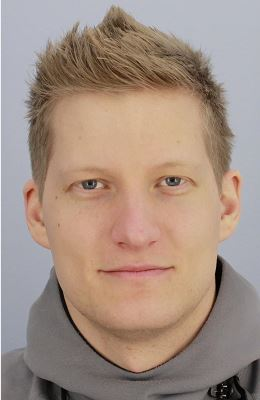
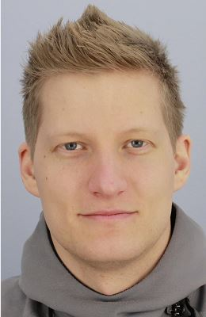

|  |
|  |
I'm a doctoral student in the group of Theoretical Computer Science. I do research in security and privacy, primarily in decentralized online social networks. My supervisor is Sonja Buchegger.
21st--23rd Oct 2015. I attended the 2nd Cyber Security and Privacy (CySeP) Winter School in Stockholm, Sweden.
19th--21st Oct 2015 I attended the 20th Nordic Conference on Secure IT Systems (NordSec) in Stockholm, Sweden. I presented the paper "Towards Perfectly Secure and Deniable Communication using an NFC-Based Key-Exchange Scheme"."
18th Oct 2015. I attended the COINS PhD Student Seminar 2015 in Stockholm, Sweden.
16th--21st Aug 2015. I attended the 10th IFIP Summer School on Privacy and Identity Management in Edinburgh, UK.
11th--12th Jun 2015. I attended the 15th SWITS Seminar in Sätra brunn, Sweden.
3rd--8th May 2015. I attended the 8th FRISC Winter School in Information Security in Finse, Norway.
27th--31st Oct 2014. I attended the 1st Cyber Security and Privacy (CySeP) Winter School in Stockholm, Sweden.
Daniel Bosk, Martin Kjellqvist and Sonja Buchegger. "Towards Perfectly Secure and Deniable Communication Using an NFC-Based Key-Exchange Scheme", in: Sonja Buchegger and Mads Dam. Secure IT Systems --- 20th Nordic Conference NordSec 2015. Lecture Notes in Computer Science, Springer, 2015. To appear. [src] [DiVA] [SpringerLink]
Daniel Bosk and Sonja Buchegger. "Privacy-Preserving Access Control for Decentralized Online Social Networks Using Anonymous Broadcast Encryption", in: Pre-proceedings of the IFIP Summer School on Privacy and Identity Management 2015. [src]
Daniel Bosk. A Formalisation of Swedish Upper Secondary School Mathematics. Master's thesis. Trita-MAT. MA, ISSN 1401-2278. Department of Mathematics, KTH Royal Institute of Technology, and Department of Mathematics and Science Education, Stockholm University. 2011. [DiVA]